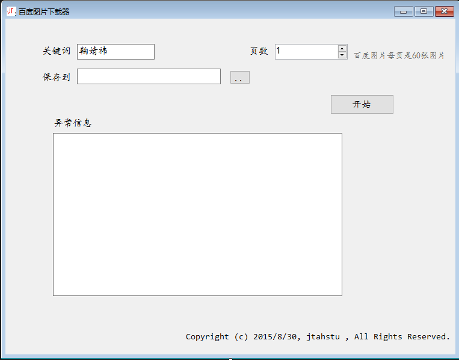
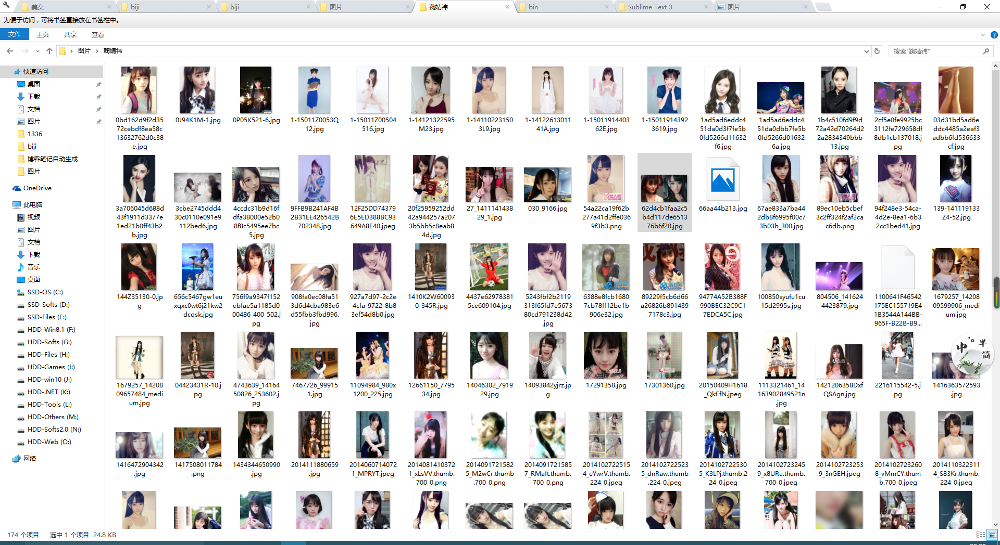

基于C#百度图片批量下载工具的实现
在家没网，无聊怎么办？不如来看点美女图片吧，网络快时批量下载，有空时慢慢看，嘿嘿，本人是个好人。于是这个工具的实现，那简直是迫在眉睫啊，来看看是怎么实现的吧。
先上图片吧：

这是软件的WinForm界面，基于C#实现。
上代码，也就100多行。
using System;
using System.Collections.Generic;
using System.ComponentModel;
using System.Data;
using System.Drawing;
using System.IO;
using System.Linq;
using System.Net;
using System.Text;
using System.Threading;
using System.Threading.Tasks;
using System.Windows.Forms;
using Newtonsoft.Json;
using Newtonsoft.Json.Linq;
namespace 图片下载器 {
public partial class Form1 : Form {
private string dir;
public Form1() {
Control.CheckForIllegalCrossThreadCalls = false;//这种方法不推荐使用，即不检查跨线程操作，应该使用委托的
InitializeComponent();
}
private void butSelect_Click(object sender , EventArgs e) {
FolderBrowserDialog dlg = new FolderBrowserDialog();
if (dlg.ShowDialog() == System.Windows.Forms.DialogResult.OK) {
textDir.Text = dlg.SelectedPath;
}
}
public static int pagecount = 1;
private void Showpages() {
this.textShow.AppendText("目前正在下载第" + pagecount + "页\n");
}
private void butStart_Click(object sender , EventArgs e) {
string key = textKeyWords.Text;
if (string.IsNullOrEmpty(key)) {//检测关键字
MessageBox.Show("请输入关键词！");
return;
}
if (string.IsNullOrEmpty(textDir.Text)) {//检测路径
MessageBox.Show("请选择路径！");
return;
}
dir = textDir.Text;
if (!dir.EndsWith("\\")) {
dir = dir + "\\";
}
Thread thread = new Thread(() => {//启动一个新线程
process(key);
});
thread.Start();//线程启动
}
private void process(string key) {
int count = (int)numericUpDown.Value;//请求的页面数量
for (int i = 0 ; i < count ; i++) {
pagecount = i + 1;
Showpages();
HttpWebRequest req = (HttpWebRequest)WebRequest.Create("http://image.baidu.com/search/avatarjson?tn=resultjsonavatarnew&ie=utf-8&word=" + Uri.EscapeUriString(key) + "&cg=girl&pn=" + (i + 1) * 60 + "&rn=60&itg=0&z=0&fr=&width=&height=&lm=-1&ic=0&s=0&st=-1&gsm=360600003c");
using (HttpWebResponse res = (HttpWebResponse)req.GetResponse()) {
if (res.StatusCode == HttpStatusCode.OK) {
using (Stream stream = res.GetResponseStream()) {
try {
download(stream);
} catch (Exception e) {
textShow.BeginInvoke(new Action(() => {
textShow.AppendText(e.Message + Environment.NewLine);
}));
}
}
} else {
MessageBox.Show("获取第" + i + "页失败！" + res.StatusCode);
}
}
}
}
private void download(Stream stream) {
using (StreamReader reader = new StreamReader(stream)) {
string json = reader.ReadToEnd();
JObject objRoot = (JObject)JsonConvert.DeserializeObject(json);
JArray imgs = (JArray)objRoot["imgs"];
for (int j = 0 ; j < imgs.Count ; j++) {
JObject img = (JObject)imgs[j];
string objUrl = (string)img["objURL"];//http://hibiadu....../1.jpg
// textShow.AppendText(objUrl + Environment.NewLine);
//保存的路径是：destDir；
try {
DownloadImage(objUrl);//避免一个方法中的代码过于复杂
} catch (Exception ex) {
//子线程的代码中操作界面控件要使用BeginInvoke
textShow.BeginInvoke(new Action(() => {
textShow.AppendText(ex.Message + Environment.NewLine);
}));
}
}
}
}
private void DownloadImage(string objUrl) {
//得到保存的路径
string path = Path.Combine(dir , Path.GetFileName(objUrl));
HttpWebRequest req = (HttpWebRequest)WebRequest.Create(objUrl);
req.Referer = "http://image.baidu.com/";//欺骗网站服务器这是从百度图片发出的
using (HttpWebResponse res = (HttpWebResponse)req.GetResponse()) {
if (res.StatusCode == HttpStatusCode.OK) {
using (Stream stream = res.GetResponseStream())
using (Stream filestream = new FileStream(path , FileMode.Create)) {
stream.CopyTo(filestream);
}
} else {
throw new Exception("下载失败" + res.StatusCode);
}
}
}
}
}

右击查看图片，即可查看大图。
最终效果就是这个样子，如何，自我感觉还是可以的。
百度网盘下载：http://pan.baidu.com/s/1kT3YzXl 密码: gafi
第一个为本程序的整个解决方案，第二个为本程序编译后的可运行程序，Windows下可以直接跑的。